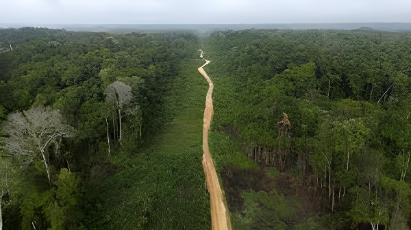

Depuis le retour de Lula au pouvoir en janvier 2023, la déforestation en Amazonie brésilienne recule pour la quatrième année consécutive. En 2025, seulement 5 796 km² de forêt ont été détruits — le chiffre le plus bas depuis 2014. Mais derrière ce signal encourageant se cachent des fragilités structurelles : montée des incendies, résistance de l'agro-industrie dans le Cerrado, et une trajectoire encore loin de l'objectif zéro déforestation d'ici 2030 que Lula a promis au monde lors de la COP30 à Belém.
Pour comprendre l'ampleur du redressement en cours, il faut mesurer le gouffre creusé entre 2019 et 2022. Dès sa prise de fonction en janvier 2019, Jair Bolsonaro a conduit un démantèlement méthodique des institutions de protection environnementale brésiliennes. L'Ibama (agence de surveillance environnementale) a vu ses moyens réduits, le budget de l'INPE (Institut national de recherches spatiales) a été amputé, et le directeur de l'INPE Ricardo Galvão a été remercié après avoir publié des données que Bolsonaro qualifiait de « mensongères ».
Le résultat est documenté par les satellites : entre août 2020 et juillet 2021, 13 235 km² de forêt amazoniennes ont été rasés — le niveau le plus élevé depuis 2006. Sur l'ensemble du mandat Bolsonaro (2019–2022), la déforestation annuelle moyenne a bondi de 75 % par rapport à la décennie précédente. Entre 2009 et 2018, la moyenne annuelle était de l'ordre de 6 500 km² — un chiffre que Lula retrouvera en quelques années à peine.
Dès son arrivée au pouvoir, Lula a réactivé les structures de contrôle : l'Ibama a retrouvé des effectifs et des crédits, les opérations anti-déforestation illégale se sont multipliées. De janvier à octobre 2025, l'Ibama a réalisé 9 540 inspections — soit une hausse de 38 % sur un an — et infligé 2,85 milliards de réais d'amendes pour infractions environnementales.
Les résultats sont au rendez-vous selon les données PRODES : 9 001 km² détruits sur août 2022–juillet 2023 (−22,3 % par rapport à 2022), puis 6 518 km² en 2024 (−30 %), puis 5 796 km² en 2025 (−11 %). Il s'agit de la quatrième baisse consécutive et du troisième chiffre le plus bas depuis le début des relevés en 1988. Les données de l'ONG Imazon pour la période août 2025–mars 2026 vont dans le même sens, enregistrant une chute de 36 % et un total de 1 460 km² déboisés, le plus bas depuis 2018.
Bolsonaro prend ses fonctions. Dès les premières semaines, démantèlement des politiques environnementales, coupes budgétaires à l'INPE et à l'Ibama. Le directeur de l'INPE, Ricardo Galvão, est renvoyé en août pour avoir publié des données de déforestation jugées « mensongères » par Bolsonaro.
L'INPE signale 39 194 incendies depuis janvier, soit 77 % de plus que l'année précédente. L'Amazonie est en proie à des feux massifs. La communauté internationale s'alarme. Le G7 propose une aide de 20 millions de dollars que Bolsonaro refuse dans un premier temps.
PRODES : 13 235 km² détruits sur l'année de référence — record depuis 2006. Le Brésil s'engage à la COP26 à mettre fin à la déforestation illégale d'ici 2030, engagement peu crédible au vu des tendances en cours.
Retour de Lula. Il réactive immédiatement les instruments de contrôle et annonce l'objectif zéro déforestation en Amazonie d'ici 2030. Marina Silva, ancienne ministre emblématique de l'Environnement sous ses premiers mandats, revient au gouvernement.
PRODES 2023 : 9 001 km², soit −22,3 % — premier chiffre en dessous de 10 000 km² depuis 2018. Lula en fait un argument clé pour obtenir la présidence de la COP30.
COP30 à Belém, en plein cœur de l'Amazonie. PRODES 2025 confirme 5 796 km² — plus bas depuis 2014. Mais la conférence aboutit à un texte minimaliste : aucun engagement contraignant sur la déforestation, les feuilles de route renvoyées à 2026.
Imazon publie un rapport couvrant août 2025–mars 2026 : 1 460 km² déboisés (−36 %), plus bas depuis 2018. La tendance se confirme mais des hausses locales (Mato Grosso, +25 %) et la montée des incendies restent préoccupantes.
La déforestation en Amazonie n'est pas un phénomène anarchique : elle répond à des logiques économiques précises. L'agro-industrie — soja, viande bovine, huile de palme — est historiquement le premier moteur. Les agriculteurs défrichent pour créer des pâturages ou des terres arables, bénéficiant d'une demande mondiale soutenue et d'un accès à des terres à coût marginal quasi nul. Le Brésil est le premier exportateur mondial de soja et de bœuf : ces filières représentent plus de 70 % des émissions de gaz à effet de serre du pays selon l'Observatoire du climat brésilien.
Le second moteur est l'exploitation minière et le garimpo (orpaillage illégal), qui a explosé sous Bolsonaro, notamment sur les terres indigènes Yanomami où des milliers de garimpeiros ont envahi des zones protégées. Lula a lancé en 2023 une opération d'expulsion massive, aboutissant à l'évacuation de la majorité des orpailleurs illégaux. Le troisième facteur, croissant, est le feu : en 2024, environ 60 % des surfaces déboisées résultaient d'incendies. La sécheresse exceptionnelle de 2024 a provoqué des feux couvrant six fois plus de surface que l'année précédente.
L'Amazonie occupe l'essentiel de l'attention médiatique, mais le Cerrado — vaste savane boisée au sud de l'Amazonie — subit une pression agro-industrielle encore plus intense. En 2025, selon l'INPE, 7 235 km² de végétation du Cerrado ont été détruits, soit 24,8 % de plus que la superficie détruite en Amazonie la même année. Cette asymétrie s'explique par la moindre protection juridique du Cerrado : les obligations de maintien de couvert végétal y sont moins contraignantes que dans le biome amazonien. Si la déforestation du Cerrado a également reculé de 11,49 % en 2025 — un niveau inédit depuis six ans — la trajectoire reste bien moins encourageante qu'en Amazonie.
| Période | Amazonie (km²) | Variation |
|---|---|---|
| 2019–2020 (Bolsonaro) | 9 700 | Base haute |
| 2020–2021 (Bolsonaro) | 13 235 | +36 % — record 15 ans |
| 2022–2023 (Lula I) | 9 001 | −22,3 % |
| 2023–2024 (Lula I) | 6 518 | −27,6 % |
| 2024–2025 (Lula I) | 5 796 | −11 % — plus bas depuis 2014 |
Accueillir la COP30 à Belém, au cœur de l'Amazonie, en novembre 2025, était pour Lula un acte politique fort : montrer que le Brésil menait la lutte contre la déforestation et réclamait un rôle de leader climatique mondial. Les données PRODES lui ont fourni un argument tangible. Mais la conférence elle-même a déçu les attentes : qualifiée par la ministre brésilienne de l'Environnement Marina Silva de « COP des COP », elle a abouti à un texte minimaliste. La sortie des énergies fossiles n'y est pas mentionnée, et les feuilles de route sur la déforestation ont été renvoyées à des négociations sur deux ans. L'Union européenne, elle-même divisée, n'a pas finalisé à temps son nouveau règlement sur la déforestation importée (EUDR), repoussé à 2026.
« Nous ne pouvons pas nous reposer sur nos lauriers. Notre défi, c'est de réduire la déforestation à zéro d'ici 2030. »
— Marina Silva, ministre brésilienne de l'Environnement, COP30, Belém, novembre 2025« Nous ferons tout ce qu'il faut pour éviter la déforestation et la dégradation de nos biomes. »
— Luiz Inácio Lula da Silva, COP27, Charm el-Cheikh, novembre 2022La baisse de la déforestation arrive à un moment critique sur le plan scientifique. Des chercheurs de l'Institut de Potsdam pour la recherche sur les impacts du climat ont montré qu'environ les deux tiers de la forêt amazonienne pourraient basculer vers des écosystèmes dégradés, voire vers la savane, à des niveaux de réchauffement plus faibles qu'estimé jusqu'ici. L'Amazonie produit en effet près de la moitié de ses propres précipitations via la transpiration des arbres — un cycle dit des « rivières volantes » qui s'affaiblit avec la déforestation et les sécheresses. Dans le sud du bassin amazonien, selon des chercheurs de l'Institut de recherche pour le développement (IRD), ce point de bascule est déjà localement franchi.
Le recul de la déforestation sous Lula est factuel et documenté. En moins de trois ans, la superficie annuelle rasée a été divisée par plus de deux par rapport au pic Bolsonaro — une performance que peu d'observateurs anticipaient à cette vitesse. Mais l'objectif zéro déforestation en 2030 reste hors de portée au rythme actuel : une étude de terrain estime que le Brésil est à 63 % hors trajectoire par rapport aux réductions annuelles nécessaires. Le Mato Grosso, premier État agricole du pays, affiche même une hausse de 25 % de la déforestation en 2025. Et si le feu recule, la dégradation forestière silencieuse — arbres affaiblis, écosystèmes fragilisés, sols asséchés — reste un angle mort des statistiques officielles. Ce qui se dessine, c'est un Brésil qui a renoué avec la protection de son patrimoine forestier, mais qui se trouve pris entre la pression d'une agro-industrie mondialement intégrée, les effets déjà visibles du dérèglement climatique sur ses propres forêts, et des engagements internationaux qu'il devra tenir sous le regard du monde entier.